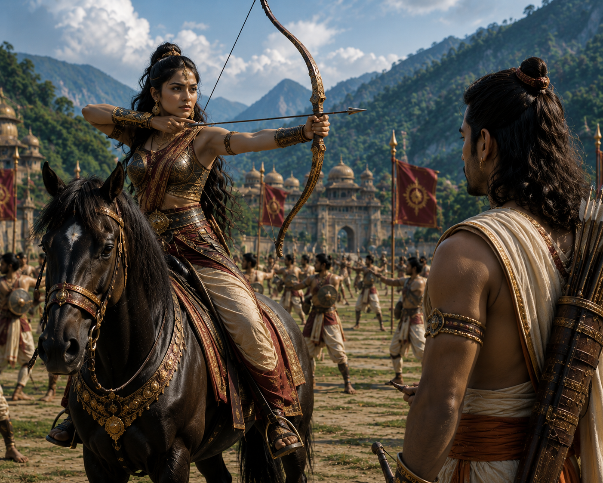

Among the many remarkable women whose lives are woven into the Mahabharata, Chitrangada holds a unique place.
She is often remembered simply as one of Arjuna's wives. Yet Chitrangada was far more than that. She was a fearless warrior, a capable ruler, and the rightful heir to the ancient kingdom of Manipura.
Chitrangada was born to King Chitravahana, the ruler of Manipura. She was his only child.
According to the Mahabharata, an ancient blessing had long existed within their royal lineage. It is traditionally said that Chitravahana's ancestors had performed severe penance in devotion to Lord Shiva, who granted that only one child would be born in each generation to inherit the kingdom.
When Chitrangada was born, King Chitravahana made no distinction between a son and a daughter.
He declared her the future ruler of Manipura.
Instead of being raised merely as a princess, she was educated as the kingdom's future sovereign.
She mastered archery, swordsmanship, mace combat, horsemanship, chariot warfare, and military strategy. At the same time, she learned the principles of governance, justice, diplomacy, and the welfare of her people.
As the years passed, Chitrangada became a courageous warrior and an admired leader.
She personally defended the borders of her kingdom and earned the love and respect of her subjects.

Meanwhile, according to the events of the Mahabharata, Arjuna had begun his twelve-year pilgrimage and exile in accordance with a vow made among the Pandava brothers.
During his travels, he visited many sacred places before finally arriving in the beautiful kingdom of Manipura.
Arjuna was deeply impressed by its natural beauty, disciplined administration, and highly trained soldiers.
One day, near the royal palace, he witnessed an extraordinary sight.
A large military exercise was underway.
At its center stood a young warrior who displayed remarkable skill with the bow, commanded troops from horseback, and led the entire training with confidence and authority.
Moments later, Arjuna learned that this fearless warrior was not a prince, but Princess Chitrangada herself.
Her courage, confidence, and commanding presence left a lasting impression on him.

Soon afterward, Arjuna met King Chitravahana and asked for Chitrangada's hand in marriage.
The king already knew of Arjuna's unmatched valor and noble lineage and gladly welcomed the proposal.
However, before giving his consent, he revealed an important tradition of his royal house.
"O Partha, only one child is born in each generation of my family. Chitrangada is my only heir and the future ruler of Manipura. If you marry her, the son born from this union must remain here, inherit this kingdom, and rule Manipura after me."
It was an unusual condition.
Arjuna knew that his pilgrimage was not yet complete and that many more journeys still lay ahead.
Nevertheless, he accepted the king's request without hesitation.
His admiration for Chitrangada extended beyond affection; he deeply respected her duty toward her people and her responsibility as the future queen of Manipura.
Their marriage was then celebrated according to the sacred Vedic rites.
Following the wedding, Arjuna remained in Manipura for nearly three years.
Together, he and Chitrangada governed the kingdom, worked for the welfare of its people, and lived peacefully.
In time, Chitrangada gave birth to a son.
He was named Babruvahana.
The young prince would one day become the great king of Manipura and later play a remarkable role in one of the most emotional episodes of Arjuna's life after the Mahabharata War.
After the birth of Babruvahana, Arjuna remained in Manipura for some time.
Yet he never forgot that his period of exile and pilgrimage was still incomplete.
He had vowed to visit the sacred places of Bharatavarsha, and abandoning that vow before its completion would have been contrary to his sense of duty.
One day, he decided it was time to bid farewell to Chitrangada and King Chitravahana.
The king understood that Arjuna was a Kshatriya whose life could never be confined to a single kingdom.
He respected Arjuna's decision.
For Chitrangada, however, the moment was deeply emotional.
She did not ask Arjuna to stay.
She knew that her own duty was to protect and govern Manipura, while Arjuna's duty was to uphold Dharma and fulfill the vows he had undertaken.
Arjuna lovingly lifted his young son into his arms and blessed him with a glorious future.
"Our son will become a great Kshatriya. Raise him according to the ideals of Dharma, truth, and justice."
Chitrangada accepted his words with quiet strength.
Soon afterward, Arjuna departed from Manipura and continued his sacred pilgrimage.

After his departure, Chitrangada raised Babruvahana on her own.
She taught him not only the arts of warfare but also the principles of justice, compassion, responsibility toward the people, and the importance of living according to Dharma.
As King Chitravahana grew older, he gradually entrusted many responsibilities of the kingdom to Chitrangada and the young prince.
Like his mother, Babruvahana grew into a humble, righteous, and courageous warrior.
Even in his youth, he displayed extraordinary mastery in archery, swordsmanship, chariot warfare, and the administration of the kingdom.
When the proper time arrived, King Chitravahana formally declared Babruvahana the heir to the throne of Manipura.
Chitrangada felt immense pride in her son.
She never allowed him to feel the absence of his father.
Instead, she often spoke of Arjuna's courage, his devotion to Dharma, and the ideals by which he lived.
As a result, Babruvahana always held deep respect for his father, even though he had known him only briefly during his childhood.

Years passed.
Meanwhile, the great war of the Mahabharata was fought.
The Kauravas were defeated, and Yudhishthira ascended the throne as Emperor of Hastinapura.
Some time after the war, Yudhishthira resolved to perform the sacred Ashvamedha Yajna to establish his universal sovereignty.
According to ancient tradition, the ceremonial horse was released to wander across the kingdoms of Bharat, while its protection was entrusted to Arjuna.
As the horse traveled from one kingdom to another, it eventually entered the land of Manipura.
There, destiny prepared one of the most poignant episodes in Chitrangada's life.
She was about to witness a battle that no wife and no mother would ever wish to see—a confrontation between her beloved husband and her own son.
The ceremonial horse of Emperor Yudhishthira's Ashvamedha Yajna continued its journey across many kingdoms before finally entering the land of Manipura.
At that time, Babruvahana ruled as the king of Manipura.
When he learned that the sacred horse was being guarded by none other than his father, Arjuna, he was filled with joy.
He made no preparations for war.
Instead, accompanied by his ministers and soldiers, he went out to welcome his father with humility and respect.
His hands carried no weapons—only reverence.
Babruvahana bowed at Arjuna's feet and offered him a warm welcome.
To his surprise, however, Arjuna did not accept this gesture.
"Babruvahana, you are a Kshatriya and the king of this kingdom. Once the Ashvamedha horse has entered your land, welcoming me without battle would be a violation of your Kshatriya duty. Your obligation is to challenge me in combat."
Babruvahana found himself torn between two sacred responsibilities.
On one side stood his father, whom he deeply respected.
On the other stood his duty as the ruler of Manipura.
At that very moment, Ulupi, the Naga princess and another of Arjuna's wives, arrived at the scene.
As Babruvahana's stepmother, she addressed him calmly.
"Your father himself wishes you to fulfill your Kshatriya duty. To withdraw from battle now would not be righteous."
Chitrangada was also present.
Before her stood the two people dearest to her heart—her husband and her only son.
Her heart was filled with anguish.
Yet she understood that both were simply fulfilling the Dharma expected of them as Kshatriyas.

The battle soon began.
Father and son displayed extraordinary mastery of archery.
Both were among the finest warriors of their age.
Their arrows filled the sky, and many celestial weapons were invoked as the fierce duel continued.
At last, Babruvahana released a mighty weapon.
Its tremendous force struck Arjuna, who fell gravely wounded to the ground.
Within moments, the great Pandava lay lifeless upon the battlefield.
Realizing that he had slain his own father, Babruvahana stood frozen in horror.
He cast aside his bow and fell at Arjuna's feet, overwhelmed with grief.
Chitrangada rushed toward the battlefield.
Seeing her husband's motionless body, she wept in unbearable sorrow.
Turning to Ulupi, she cried,
"If you knew this would happen, why did you allow this battle to take place? Today both my husband and my son have been destroyed."

Ulupi then revealed the hidden truth.
She explained that after the Mahabharata War, Arjuna had incurred a subtle spiritual consequence for his role in the fall of Bhishma.
The only way for that burden to be removed was for him to be defeated and touched by death at the hands of his own son.
Ulupi then produced the divine Naga Mani, a sacred jewel she had preserved.
Touching it to Arjuna's body, she invoked its miraculous power.
Almost immediately, life returned to him.
Arjuna slowly opened his eyes and rose once more.
Tears of relief streamed down Chitrangada's face.
Babruvahana fell at his father's feet and begged for forgiveness.
Arjuna embraced his son with affection.
"My son, you have committed no wrong. You have simply fulfilled your duty as a Kshatriya."
Arjuna then invited Chitrangada, Ulupi, and Babruvahana to accompany him to Hastinapura and participate in Yudhishthira's Ashvamedha sacrifice.
They gladly accepted the invitation and later journeyed to the imperial capital, where the great sacrifice was completed according to the sacred rites.
Throughout her life, Chitrangada fulfilled every role entrusted to her—with equal devotion as a wife, a mother, and the future ruler of Manipura.
For this reason, the Mahabharata remembers her not merely as one of Arjuna's wives, but as a courageous queen whose life was defined by duty, dignity, and unwavering strength.
After the completion of the Ashvamedha Yajna, Chitrangada remained in Hastinapura for some time.
There she met Emperor Yudhishthira, Queen Kunti, Draupadi, Subhadra, Ulupi, and the other members of the Pandava family.
When the great sacrifice had concluded, she returned to Manipura with her son, Babruvahana.
The Mahabharata offers little detail about the later years of Chitrangada's life.
What is clear, however, is that she continued to fulfill her responsibilities toward her kingdom and its people with the same dedication that had always defined her character.

Chitrangada's life was remarkable in many ways.
She was among the very few women in the Mahabharata who were raised from childhood as the heir to a kingdom.
She received the education of a prince, mastering warfare, governance, justice, diplomacy, and the responsibilities of kingship.
Even after marrying Arjuna, she never abandoned her duty toward Manipura.
In accordance with King Chitravahana's condition, she remained in her homeland and raised Babruvahana to become its future king.
She never allowed her personal life to come into conflict with her duty as a ruler.
She was, at once, Arjuna's wife and the future queen of Manipura.
She was both the loving mother of Babruvahana and the steadfast guardian of her kingdom.
Through her life, the Mahabharata demonstrates that love and duty need not stand in opposition.
Chitrangada honored her husband without neglecting the responsibilities entrusted to her by her people.
When Arjuna and Babruvahana faced one another in battle, she stood between them as both wife and mother.
The sorrow she endured at that moment is almost beyond imagination.
Yet she remained composed, and in the end witnessed the reunion of her family.

Chitrangada's story also teaches that a great ruler is not defined by strength in battle alone.
True leadership is founded upon justice, patience, responsibility, and unwavering devotion to the welfare of one's people.
Although her role in the Mahabharata is relatively brief, she is remembered among its most distinguished women for her courage, wisdom, and steadfast commitment to Dharma.
Her life reminds us that true honor is earned not through birth or position, but through integrity, courage, and unwavering dedication to one's duty.
For this reason, Chitrangada continues to be remembered as one of the great heroines of the Mahabharata—whose contributions, though described only briefly, remain deeply significant.
Primary Source: Mahabharata — Adi Parva and Ashvamedhika Parva.
This retelling is based primarily on the Mahabharata, with certain traditional details preserved from later narrative traditions where noted.
Note: Chitrangada's marriage to Arjuna, the birth of Babruvahana, and the encounter during the Ashvamedha campaign are described in the Mahabharata. Some background traditions—such as the lineage blessing associated with King Chitravahana and certain explanatory details surrounding Arjuna's revival—are preserved more fully in later retellings and traditional commentaries.